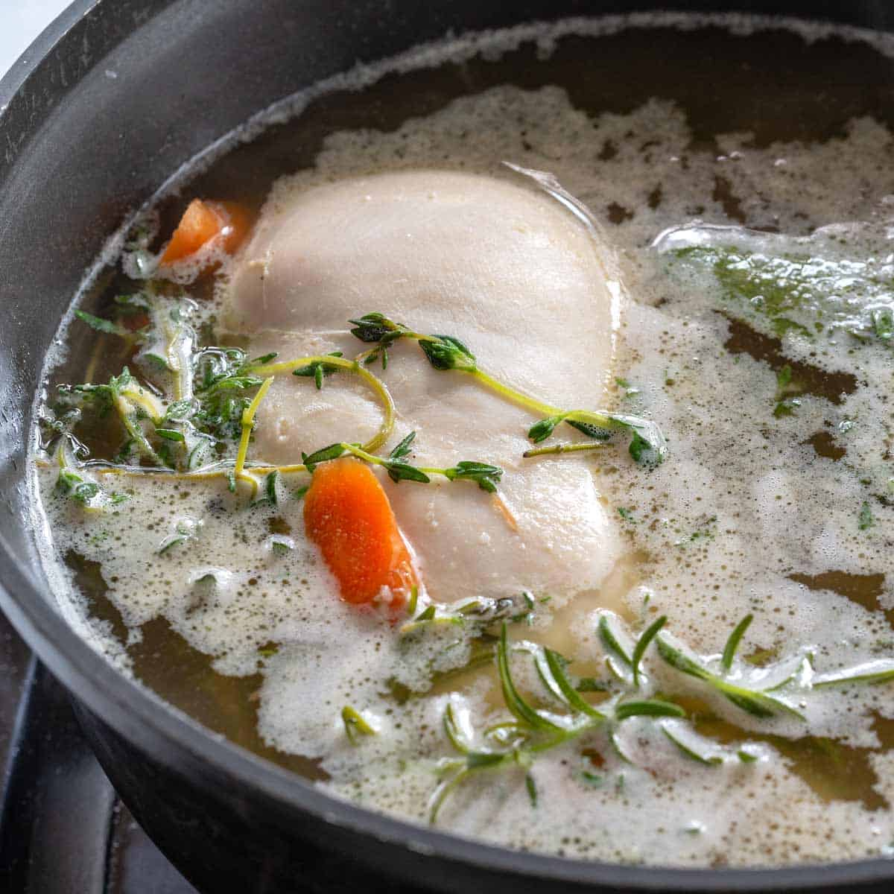

Trout is an excellent source of calcium and iron but also omega 3 and 6, which are credited with lowering the risk of coronary heart disease and im-proving cholesterol levels.
Ingredients
150g Sea Trout
100ml Water
50g Unsalted butter
200g Potatoes
100g Broad Beans
100g Peas
Salt
Pepper
15g Lovage Leaves
Mellow Yellow Rapeseed Oil
Instructions
Line the bottom of the poaching pan with greaseproof paper and cut a hole in the centre to stop paper rising. Poach sea trout in Mellow Yellow Rapeseed Oil at 65°C for 6-7 minutes. Keep an eye on the temperature, the majority of cooking can be done on residual heat. The poaching oil can be used for each cut of fish.
For the vegetables, boil the potatoes and cut into wedges, then put in pre-warmed water and butter solution (around 50g butter to 100ml water), add broad beans that have been blanched and peeled; peas; salt and pepper. Chop Lovage leaves and add.
Drain the vegetables and remove fish from the poaching pan.
Dress plate with the vegetables first around the edge and little in middle, place the trout in the middle, decorate with whole lovage leaves and drizzle some of the poaching oil over.
Poaching

Is a cooking technique that involves cooking by submerging food in a liquid, such as water, milk, stock or wine. Poaching is differentiated from the other "moist heat" cooking methods, such as simmering and boiling, in that it uses a relatively low temperature (about 70–80 °C (158–176 °F)).
How do you poach something?
Poaching is a culinary technique that involves cooking something in liquid with a temperature ranging from 140 F to 180 F. This compares with boiling, which happens at 212 F, and simmering, in which food is immersed in a cooking liquid with a temperature in the range between 180 F and 205 F.